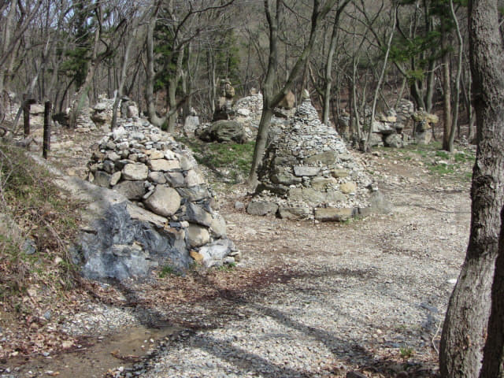
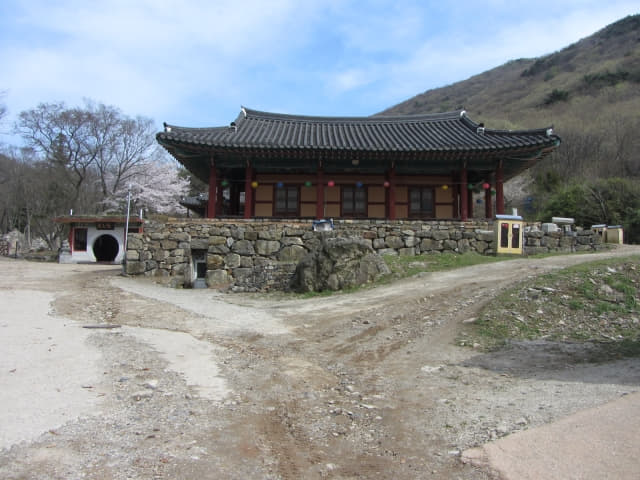
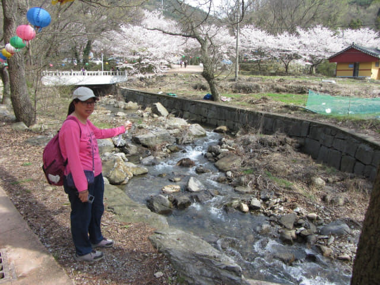

早上九時十分從靈鷲山北面的「진달래기념비」登山口出發, 穿過一個又一個山峰, 越過人間仙境的粉紅色杜鵑花海和杜鵑花隧道, 抵達靈鷲山最高山峰, 海拔510米高的進禮峯, 然後一直往下走, 於下午二時二十五分到達靈鷲山山麓下的興國寺, 也是我們跨越靈鷲山的終點站。
按出發前搜集到的資料, 興國寺有巴士經麗川站往麗手市區的, 只是不知道巴士時刻表而已, 現在那麼早, 估計仍然有巴士行駛的, 如果沒有, 頂多是乘計程車, 所以並不擔心交通的問題。接著我們會穿過興國寺, 尋找巴士站的位置, 當然也順道遊覽興國寺。
我們從東面最邊陲的地方進入興國寺, 迎面是一座古樸典雅的殿堂 — 圓通殿(원통전), 環境十分清淨優美。

圓通殿旁的木拱橋。如果剛才選擇從院洞川右岸的小路走, 便會從這木拱橋進入興國寺。

圓通殿的環境相當優美, 在附近流連了一會才離去, 循寺廟中的步道繼續向前走。
滿月堂 (만월당)。


大雄殿。
法王門 (법왕문)。
穿過興國寺主體建築, 迎面是一個停車場, 按理沿馬路一直走便會看到巴士站。
停車場及馬路兩旁都是燦爛櫻花, 十分優美。
沿院洞川走一會。
跨過極樂橋 (극략교)。
接著轉左沿院洞川繼續向前走。

在前面向右拐個彎。
靈鷲山興國寺一柱門 (일주문)
前面便是靈鷲山興國寺的山門 — 一柱門, 照常理, 巴士站應該在山門外吧!
離開興國寺 跨越靈鷲山這登山行程完滿完成
穿過靈鷲山興國寺的山門, 便離開了興國寺, 而跨越靈鷲山這登山行程也在這裡完滿結束。接著的任務是看這裡是否有巴士往麗川火車站或麗水市區。